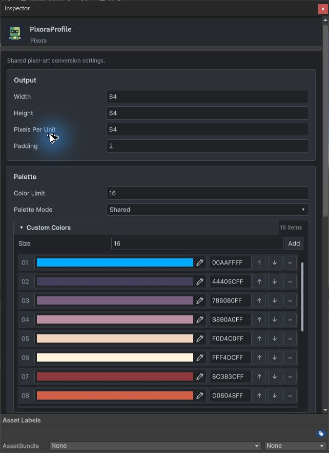
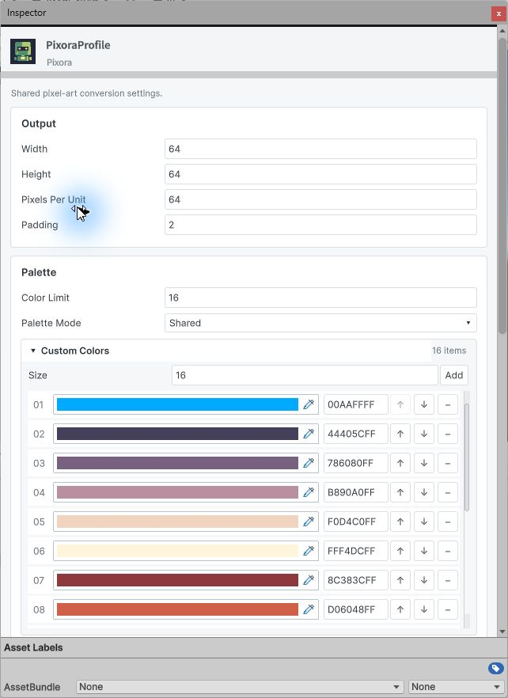
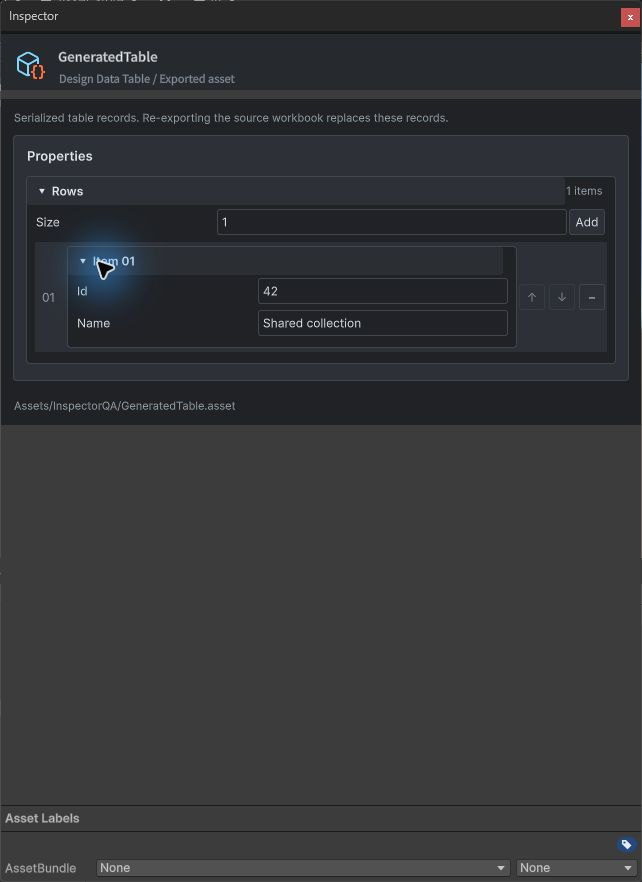
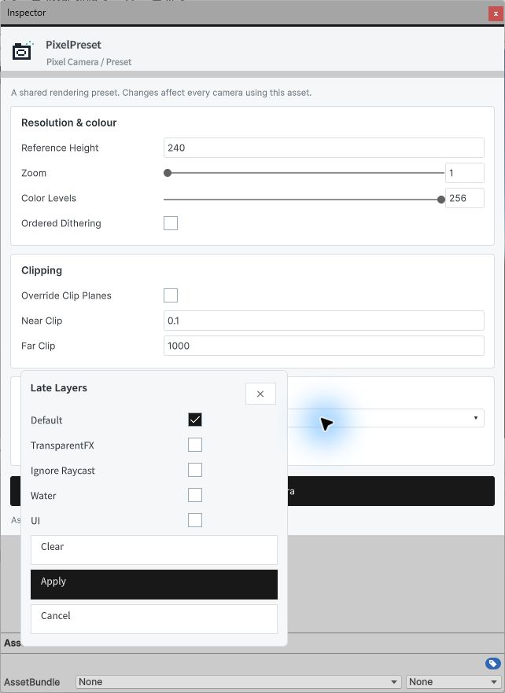

Tracefolio REPORTS & ISSUES
Tracefolio REPORTS & ISSUESPixora 컬러 목록과 공통 Inspector 선택 UI
검증 대기컬러·일반 배열·중첩 레코드와 색상·Enum·에셋·레이어 선택을 공통 템플릿으로 적용했습니다.
작업 결과
구현 및 현재 기능 검증 완료. Escape 유틸리티 창 동작과 과거 문서 전체 검증은 남겨 두었습니다.
변경 내용
적용 내용
Templete 1.5.0. TemplatePropertyCollection과 SerializedField 공통 생성 경로로 컬러 및 일반 배열·중첩 값을 연결했습니다. 색상 행에 RGBA·추가·삭제·위아래 이동·페이지를 제공하며 신규 색은 흰색입니다. TemplateInspectorPopover·EnumField·MaskField로 선택 UI를 공통화했습니다. 기존 Property API는 유지합니다.




검증
Unity 6000.0.83f1 실제 Inspector에서 색상 입력→물리 Ctrl+Z/Ctrl+Y, 추가→삭제→순서 이동, Enum Shared 선택, 팔레트 에셋 선택, RGBA 00AAFFFF 적용, Default 레이어 선택의 저장값을 대조했습니다. 일반 배열에 Id42/Name Shared collection 입력·저장·재열기 확인. 6개 어셈블리 컴파일 통과. 라이트·다크·380px 폭 확인. 현재 캡처 4장 해시와 27개 다국어 가이드 검사 통과. 이미지는 원본 JPEG 그대로 각200KB 이하이며 편집·재압축하지 않았습니다. 영어 UI만 시각 확인했습니다.
검증 데이터 Pixora 문서 검증 출력 위치를 별도 지정하여 재실행했고 9개 언어·144개 챕터·90개 코드 예제·언어 이동이 통과했습니다. 아카이브 검증은 603개 Markdown/HTML과 21,820개 로컬 링크를 통과했습니다.
남은 사항
실제 Escape는 유틸리티 Inspector도 닫았습니다. 도킹 Inspector의 Escape와 새 Unity 프로세스 재열기는 미검증입니다. 과거 DataTable 가이드 전체 검증에는 기존 소스 변경·재캡처 대기가 남아 있으며 전체 통과로 처리하지 않았습니다. Pixora 검증기 최초 출력 UNKNOWN 오류는 전용 출력 경로 지원으로 복구 후 통과했습니다. 교훈: 공통 Inspector에서 배열과 선택 UI도 SerializedField를 사용하도록 프로젝트 지침에 통합했습니다. 전역 새 규칙은 중복이므로 변경 없음.
작업 시간
- 제안 시간: 15~25분
- 실제로 완료된 시간: 구현·현재 범위 검증 18분 12초, 2026-11-01T03:38:28.844783+09:00; 공개 배포 확인 진행
- XERJ: 실패 — Status: XERJ node is not running; rg로 현재 소스 확인